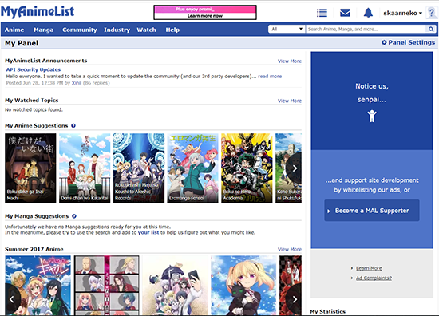
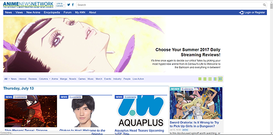
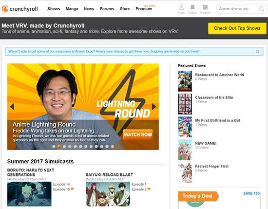
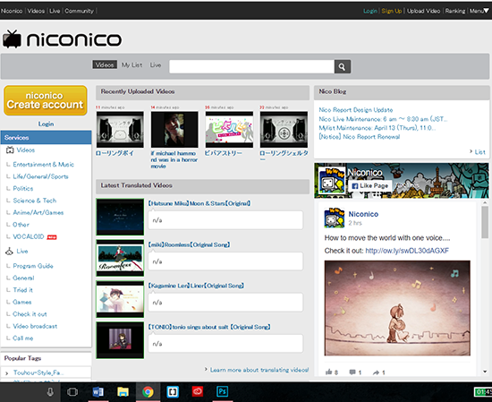
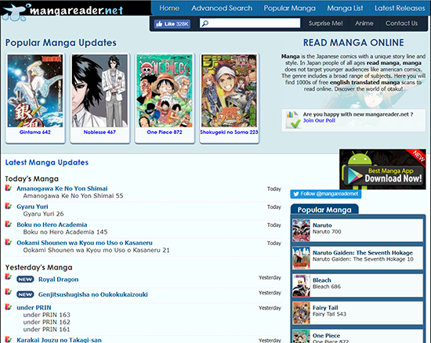

Links
Here is a list of pages to get you started.
My Anime List
My Anime List (MAL) is a website that provides detailed information on anime, manga, and their characters. You can also create an account and have your own list to keep track of the anime and manga you have seen. It is up to date with the lastest anime.MAL

Anime News Network
Anime News Network (ANN) is news website that provides news for anything Otaku. From anime to games to live actions movies even to what is happening in Japan in relation to these. The content is a bit more oriented to informing about changes and releases than going in depth.ANN

Crunchyroll
Crunchyroll is a free anime streaming website. It streams most anime up-to-date but restricts the latest weekly episode to premium users. Also has lots of deals with Otaku merchandise.Crunchyroll

Nico Nico
Nico Nico is a japanese streaming website. Its main focus is music. All the content is in the japanese language and you will need to a built in translator to use it. Great for checking out what kind of music people are listening to in Japan.Nico Nico

Manga Reader
Manga Reader is one of many manga reader sites. Not many manga are professionally translated and sold in America. So, to read all kinds of manga you have to go to one of these sites that gather many different Fan-made Translations to one site.Manga Reader
